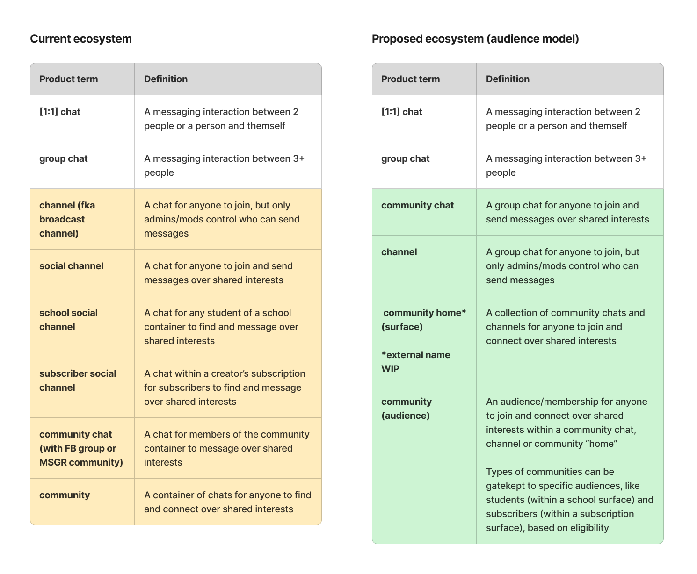
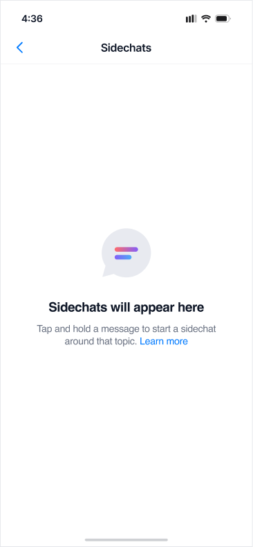
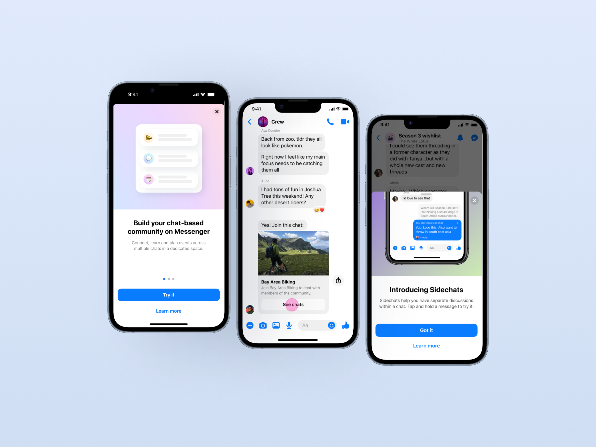

The problem
The way people connected online was changing. We saw large communities forming around niche interests, with a demand for instant messaging as a way to connect (think Discord, Telegram). However, Messenger was built for private chats between people who already knew each other. There was no way to message a loosely-connected community at scale.
Key challenges
Public messaging breaks the mental model users hold about a private app, like who can see this and who can find me. We were also designing open messaging while Messenger sprinted toward end-to-end encryption for everyone. And Communities had to connect back to Facebook Groups: two design systems with one experience.
The brief
Build a public messaging surface from scratch, inside an app a billion people already had muscle memory for.
What I did
I was one of three content designers on Communities, and a lead for most of this time. The work spanned across:
Naming
Partnered with UX and market research to define the product and feature names: community chats, broadcast chats, sidechats.
Information architecture
How communities, channels, and chats related, how that structure read to someone who'd only ever messaged one-to-one, and how that structure tied to Facebook Groups.
Voice, tone, and content standards
Ran extensive content tests to learn which value props resonated, then scaled those learnings into the standards the product grew on.
EU regulatory language
The compliant flows and disclosures that unlocked launch in Europe.
Onboarding and activation
Helping people understand, join, and participate once the product existed.
Sample 1
Naming architecture & language simplification
Defining the meaning of communities in the context of similar features with overlapping mental models.


Sample 2
Onboarding, notification and null states
Blending value propositions with privacy disclosures and educating users on a new chat type.



And then what happened?
350M
Cumulative users of Messenger Communities
30%
of all Messenger sends
5x
improvement in top-of-funnel onboarding and engagement work
2022: We took Communities from dogfooding through public testing to a global launch in 2022, announced personally by Mark Zuckerberg.
2024: Communities graduated into a standalone product, covered by TechCrunch and The Verge. I led the upgrade pathing project to migrate legacy group chats into this new experience.
What I learned
Building a new paradigm taught me that mental models must be built in layers, across naming, onboarding, repetition and crystal-clear content strategy.
I also learned that the "MVP" can't stay minimal for long — once ours shipped, we couldn't design additional bells and whistles until the core experience was solid.
Finally, I learned that simplicity reigns above all else, and taking a step back (or disconnecting your project from the Facebook Groups ecosystem) is the best thing you can do for success.
